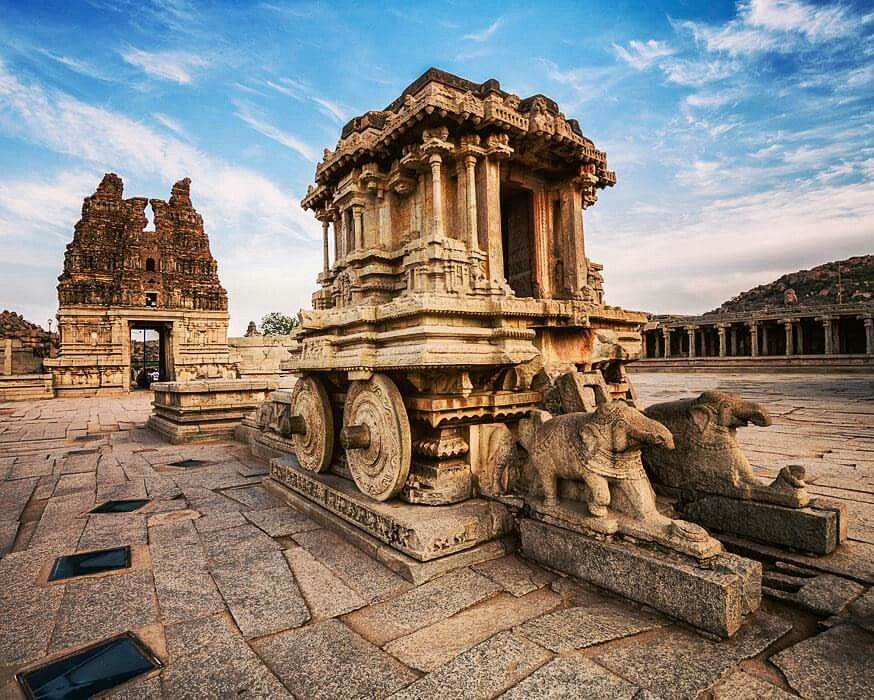

A legendary lost city that was once the powerhouse
of an ancient kingdom and an auspicious temple town
standing on the banks of the mighty Tungabhadra river,
history and mythology come to life in Hampi, Karnataka.
A queen's bath, a spectacular Lotus Palace, a royal
stable or a temple, which is said to have been the
place where the wedding of Lord Shiva and Goddess Parvati
took place, this UNESCO World Heritage site reveals a
facet of history at every turn.

About Tour
Day 1:
Hampi Archeological Museum
Queen's bath place
Stepped Tank
Elephant's Stables
Lotus mahal
Day 2:
Matanga Hill
Hippie island
Vijaya Vitthala Temple
Gagan Mahal